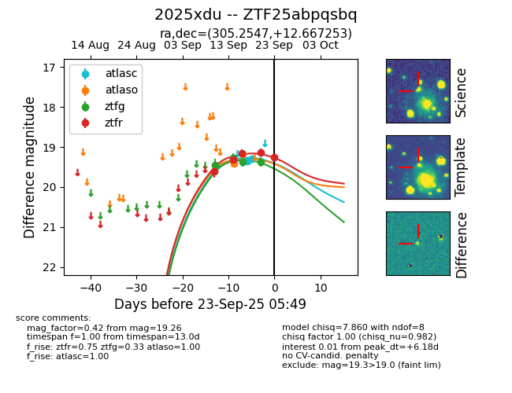
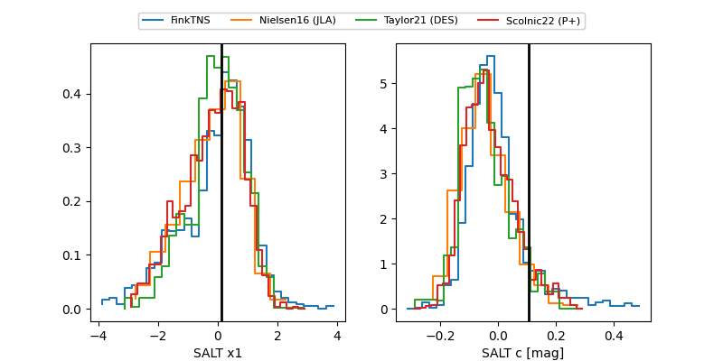

FINK: ZTF25abpqsbq
Lasair: ZTF25abpqsbq
ALeRCE: ZTF25abpqsbq
TNS: 2025xdu
YSE: 2025xdu
ZTF25abpqsbq (ztf,fink)
2025xdu (tns,yse)
equatorial (ra, dec) = (305.2547,+12.66725)
galactic (l, b) = (54.9429,-13.34622)


last atlasc=19.29, atlaso=19.18, ztfg=19.37, ztfr=19.26
2 atlasc, 2 atlaso, 4 ztfg, 5 ztfr detections